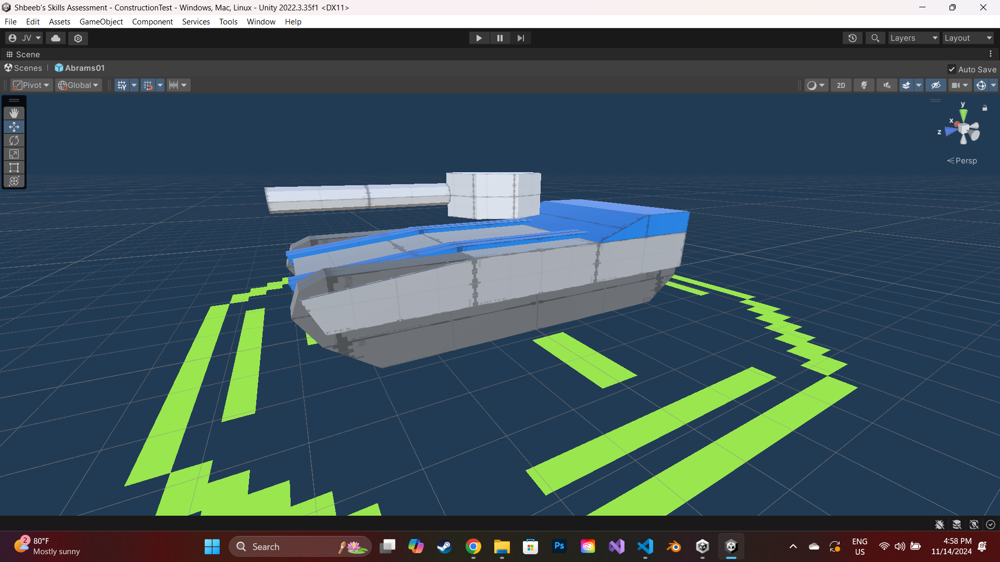
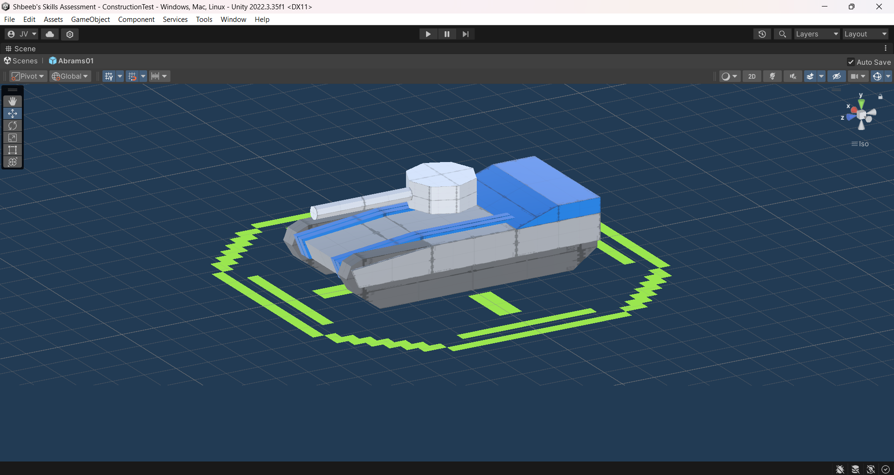
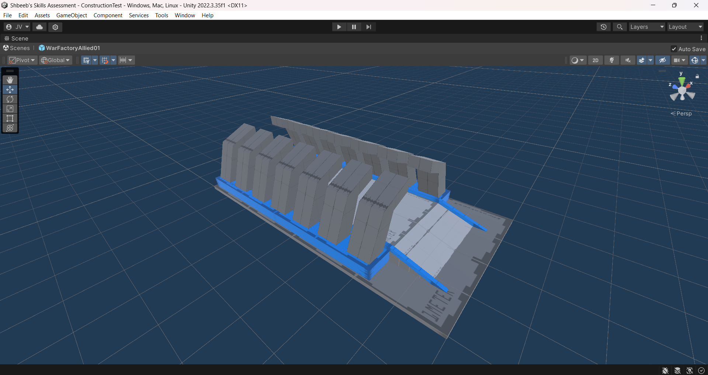
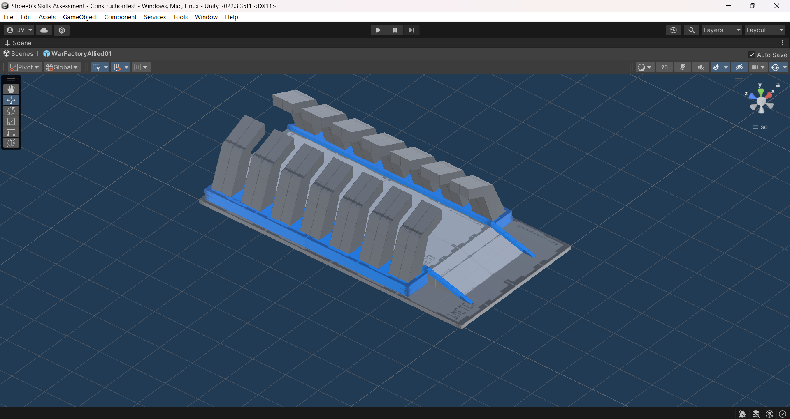
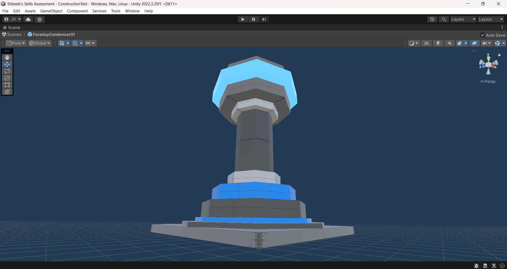
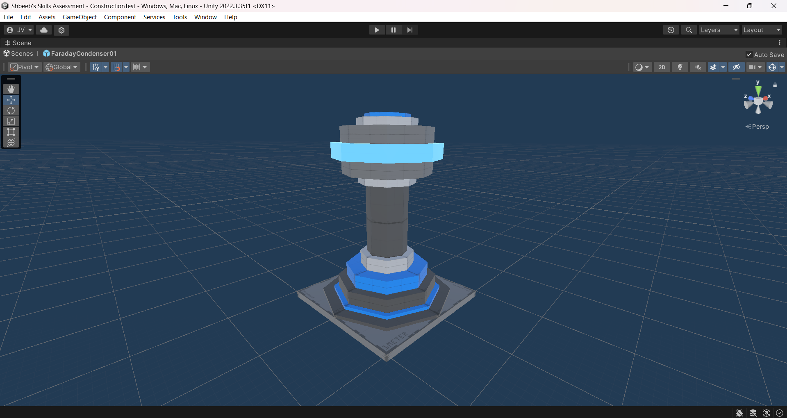
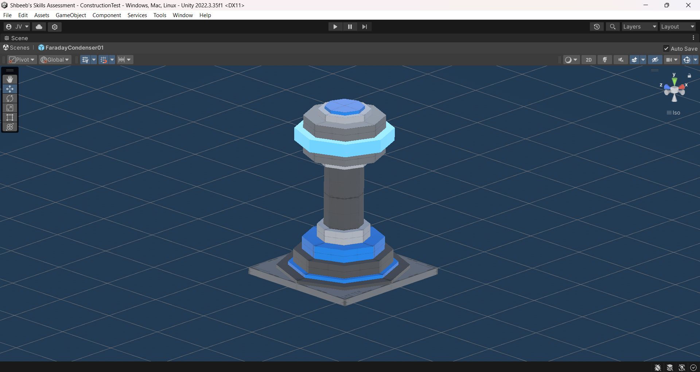
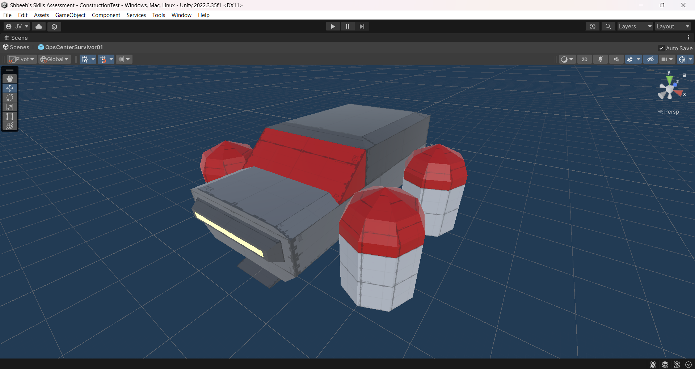
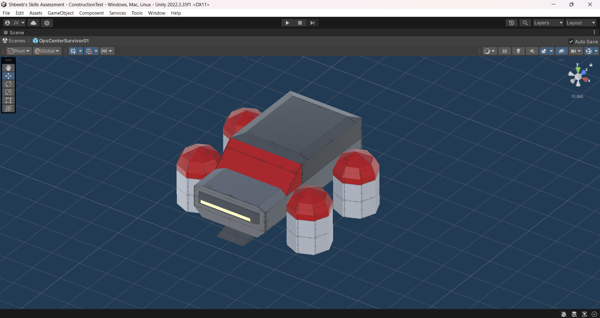
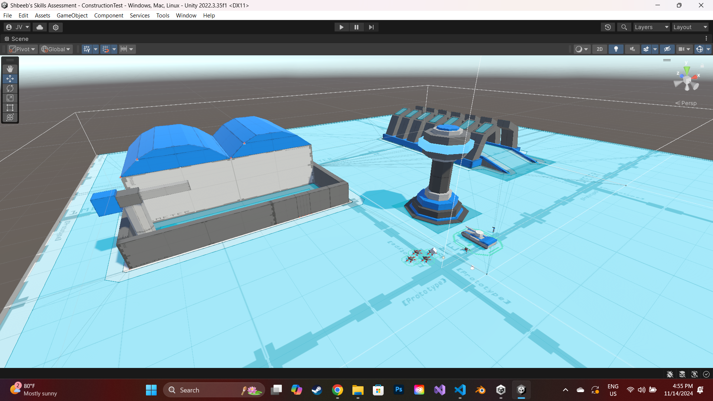

- - - Synopsis - - -
In the year of 2014, the cold war between nations goes hot. The secession of Poland and Ukraine from the Soviet Union triggers an all-out attack on the Allied Nations from the Axis Powers. Soviet forces march into Europe, desperate to reconnect itself to the East German, Hungarian, and Yugoslavian states before they fall into Allied hands. The Empire of Japan mounts a full-on invasion of the East Indian territories, enlisting troops from its Oceanian territories by the thousands, while aiding the Chinese Communist Party's efforts to retake Xīzàng from the ROC rebels. Border conflicts between the USA and CSA reignite as the former finds itself beset on all sides by Axis invasion forces. War is inevitable. The worst is yet to come.
Over three centuries have passed since the Great Shuffle. The many kingdoms of the Outer Rim have struggled to maintain order in this strange new world. Empires rise and fall in a matter of months; only one kingdom, the Armilid Empire, has maintained any amount of strength over the years, taking from other settlements to fuel their endless war machine. But even they are not immune to the trials of time, for an empire to the north threatens what little they and the other settlements have left. The worst is yet to come.
Haruka gazes over the wilderness before her. The arrival of the Immortals to this land has brought ruin upon the denizens of the Alliance. Their taint stretches far and wide, their terrible blight cast upon the innocent townsfolk as a dark shadow enveloping all, their Axis of Evil knowing no limits to human cruelty or suffering. As she watches the sun set for perhaps the final time, the young mage feels the weight of the world bearing heavy on her shoulders. The worst is yet to come.
Matsunami Momoka guards her brood with a righteous fury only a mother scorned could know. Betrayed by the other Immortals, the young and meek Dragon-Matron of a Thousand Young is forced on the run, willing to go to any extremes to ensure the survival of her children at all costs. The worst is yet to come.
Foreman Thakh'kkll sifts through the debris of what remains of her hive's command center. They barely survived the last wave of those damn creatures, with nought but a single queen remaining, and after seeing their true numbers on the horizon that fateful night she fears that her race is hopelessly doomed. She hatches a plan to guarantee her kind's survival by sending their next of kin to the stars, towards the one exoplanet known to support life. The worst is yet to come.
It's been 20 years since the worst day of Haruka's life: that of her birth. What value is the life of a princess born to a race of slaves, her people crushed under the heel of the Evil Axis since long before her generation? Haruka can only wonder as she and her people wallow in endless misery. The worst is yet to come.
Subroutine AIS-FA68D77 ran the numbers, and the dirty secret kept hidden by the Core Minds has been made apparent: the First Generation had long since perished on the voyage here. The worst is yet to come.
The worst is yet to come.
The worst is yet to come...
...
Eniko glances over towards a sleeping Haruka for but a moment and smiles, before quickly refocusing her attention at the navigation screen before her. She survived this far. Though she's seemingly all that remains of her timeline, one thing is certain: she hasn't gone down yet. She survived the onslaught of Allied bombardment, two separate organizations named "Axis", three alien invasions in a row, and even beng yeeted into another timeline. Many lives today can count on her for their own survival, and many more still yet to be discovered need only a little support from her army of the ages. The young commander ponders her situation; though she fought many battles so far, she fears still that the worst is yet to come. And as long as the Nanomolecule continues to meddle with the multiverse, no-one can truly be sure that the worst will ever come.
Staring at the screen... So many possibilities... But Eniko must choose her battles wisely. One wrong move could cost the lives of thousands of soldiers and many more civilians.
With that in mind, Eniko types a phrase into the control panel of her mobile prison, ready to make her next move.
Battle control, online.
Welcome to the world of war, Commander...
- - - About the Game - - -
Behind Enemy Lines is a bold experiment in the RTS genre, aimed at creating fantastical asymmetrical gameplay through the spiritual emulation of every major subgenre in the genre. Spam tank rushes against medieval footmen backed up by endless robotic swarms; send supersonic bombers into dragon-controlled airspace in a desperate gamble to take out the enemy Immortal when all seems lost. Advance through the ages as a struggling city-state with naught but sticks and stones, before the enemy MCV constructs an impenetrable defense. All scales of the macro-micro ladder are represented and then some, every gameplay style is accounted for, and an incredibly diverse array of tech trees and techbases creates a near-infinite amount of gameplay possibillities. And with a host of powerful modding tools and an expansive no-holds-barred sandbox mode available, the only limit to fun is your imagination!
This was a longstanding project for me, the basic idea for the universe having come to me in a dream sometime in the mid-to-late 2010's. Though I fancied the idea for a while, nothing came of it and for the longest time I figured it would never happen for real. But at the turn of 2024, my rediscovery for my love of strategy games (RTSes in particular) led me to dust off the covers of this old idea and begin to seriously develop it as an actual game - potentially my first commercial project, as well as my first solo project. Indeed, it's actually one of my only solo projects to currently have a working prototype - one, albeit, that's little more than a pathfinding test at the moment, but it takes baby steps at first, and I'm simply glad that I'm actually going somewhere with this project for once at all. Hopefully I can get it developed enough for release on Steam, though a release date is not quite in the picture yet.
Also, everything you see presented here was made by me; I had no team or group to rely on, no premade assets were used, everything was handmade and hand-coded by yours truly alone.
- - - Highlighted Work - - -
Pathfinding Scene
This video demonstrates the currently only-working scene in the project, submitted to a Game Design Workshop class as part of an introductory skilltest. Four miniature placeholder units use a basic pathfinding AI to navigate a perpetually-shifting race cource, demonstrating some of the core features I wish to include in the full project: dynamic and ever-changing maps, a basic physics propulsion model, vertical level design unusual for an RTS complete with overlapping navmeshes, and a fully-controllable camera able to look in any direction, even straight up.
It took an unreasonably long amount of time for me to figure out how to even create a simple drag-selection box; the solution involved some arcane process of converting units' physical world spaces to relative screen spaces and calculating the math from there, which I don't fully understand myself but can't complain nonetheless. Fun fact: the camera actually exists as a rendered entity in the world, taking the form of an FPV quadcopter drone like those seen in Ukraine.
Unit Placeholders
All below models are placeholders, created in Unity through the ProBuilder extension, and presented in both perspecive and isometric forms where appropriate. They're janky and rough around the corners, yes, but I repeat: pre-production prototype.
 
The familiar Abrams tank, a classic American armored cavalry vehicle with a few tricks up its sleeve compared to its IRL counterpart; chief among which is a mini-THEL mounted atop its turret, capable of intercepting a handful of enemy anti-tank warheads as well as slave-type drones (which are technically classified as projectiles by the game logic). Its armor-piercing sabot ammunition offers it (and most other Allied tanks) greater per-hit damage and armor penetration than Axis-standard HEAT warheads, but come at the cost of effectiveness against massed infantry swarms. Note that the turret is still a work-in-progress even as far as placeholders go.
 
An example of an Allied vehicle assembly, particularly those of the American tech supertree (United States, Brazil, Cuba). The obvious influences from Red Alert 2 should be quite clear from its overall shape, although here, each arm is an independently-moving apparatus equipped with a welder, riveter and other assembly gear. American vehicle assemblies have the unique ability to produce units in batches of three, though only the unit at the front of the line is allowed to be deployed; keep this in mind when queueing build orders.
  
The Faraday compressor is the standard power generator for Allied countries of the European Union. It accumulates static charge from the atmosphere itself, using some arcane process to draw in electrical currents from a far wider area than their size implies. Bundled together they can power an entire base on their own, and get adjacency bonuses with each other and a few other weather-manipulating structures.
 
The "Sea Turtle" is a class of airship used by the descendants of the Axis nations in the far future, after three consecutive alien invasions reduced Earth to a crytallized wasteland. As the main command hub of the Descendants, the Sea Turtle produces their basic worker unit - a flying cathode ray television with a digger and construction beam - and has a unique twist allowing it to take to the air and relocate to more suitable ground, in case of enemy action or resource depletion.
Other Screenshots
Screenshot of a work-in-progress sandbox scene, to be used to test the construction and training scripts once I get around to them. Notice the scale of the units and structures; another deviation from the RTS norm, the intention is to have all units exist in 1:1 scale, using icons as necessary to distinguish too-small units at far distances, Supreme Commander-style.